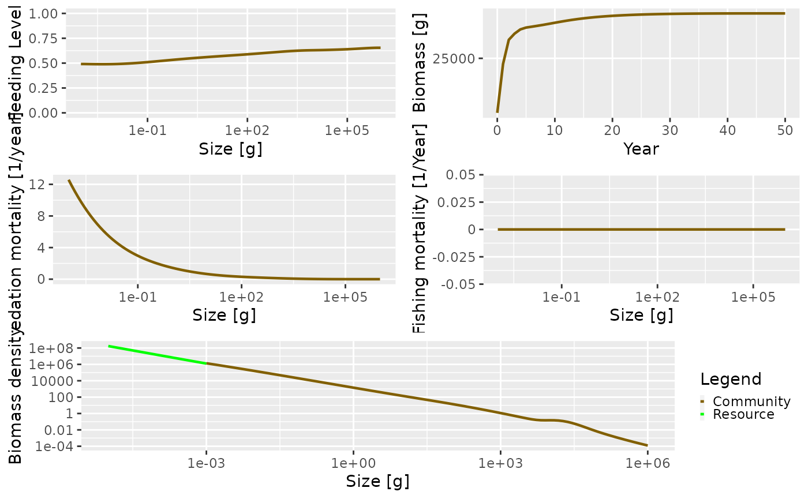
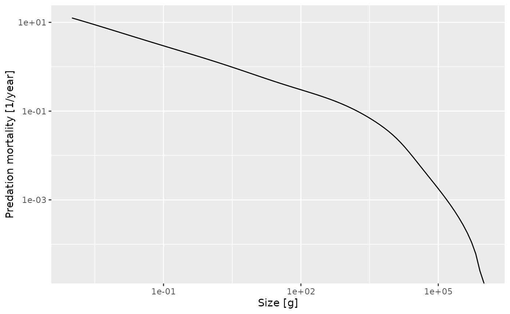
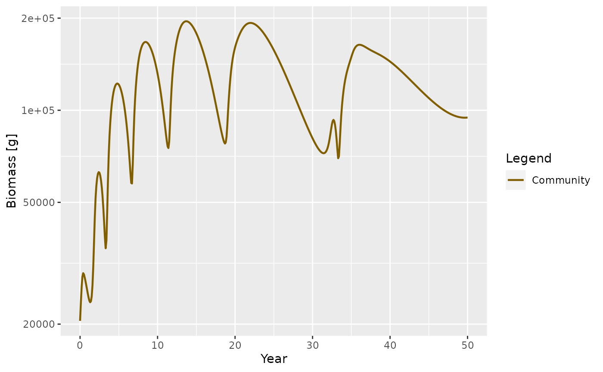

The simplest version of the size spectrum model is the community model. In the community model, individuals are only characterized by their size and are represented by a single group representing an across-species aggregate. Reproduction is not considered; the reproduction rate \(R\) is set to be constant. The resource spectrum only extends to the start of the community spectrum. Metabolism is turned off.
In this section we describe how a community model can be set up and projected through time. We then use a community model to illustrate the idea of a trophic cascade. Due to the relative simplicity of this type of model, it is useful for gently introducing some of the concepts behind the mizer package. Consequently, this section should hopefully serve as an introduction to using mizer.
Setting up a community model
The first stage in implementing a model using mizer is to create an object of class MizerParams. This class contains the model parameters including the life-history parameters of the species in the model, the fishing selectivity functions and the parameters of the resource spectrum.
To avoid having to make a MizerParams object directly, the newCommunityParams() wrapper function, has been provided that conveniently creates a MizerParams object specifically for a community model. The documentation for the function can be seen by clicking on the function name anywhere it appears on this page: newCommunityParams().
As can be seen in the help page, the function can take many arguments. We can ignore most of these for the moment as they almost all come with default values.
The arguments that you should pay attention to are: z0 (the external mortality rate), alpha (the assimilation efficiency of the community), f0 (the average feeding level of the community, which is used to calculate \(\gamma\)) and h (the coefficient of the maximum intake rate).
Although default values for these parameters are provided, you are encouraged to explore how changing the values affects the simulated community. For example, the default value of z0 is \(0.1\). Increasing this value effectively ‘shortens’ the length of the community spectrum.
The newCommunityParams() function is called by passing in the arguments by name. Any parameter that is not passed in is set to the default value. For example, the following line sets up the parameters with z0 = 0.05, f0 = 0.5. All other parameters will have their default value:
params <- newCommunityParams(z0 = 0.05, f0 = 0.5)
## Note: Using f0, h, lambda, kappa and the predation kernel to calculate gamma.Calling the function creates and returns an object of type MizerParams. We can check this using the class() function.
class(params)
## [1] "MizerParams"
## attr(,"package")
## [1] "mizer"To work with mizer you do not have to worry about how this object is realised internally. All you need to know is that it contains all the information needed to run model simulations and that mizer provides you with functions to access, use and modify this information.
A very brief description of the model contained in the MizerParams object can be seen by calling the summary() method on it:
summary(params)
## An object of class "MizerParams"
## Consumer size spectrum:
## minimum size: 0.001
## maximum size: 1e+06
## no. size bins: 100
## Resource size spectrum:
## minimum size: 8.11131e-11
## maximum size: 0.001
## no. size bins: 79 (178 size bins in total)
## Species details:
## species w_inf w_mat w_min f0 beta sigma
## 1 Community 1e+06 NA 0.001 0.5 100 2
## Fishing gear details:
## Gear Target species
## Community CommunityIn the summary you can see that the size range of the community spectrum has been set from \(0.001\) to \(10^{6}\) and this is divided into \(100\) size bins. Similar information is available for the resource spectrum. Additionally, the community is made up of only one species, called Community, which has an asymptotic size of \(10^{6}\) and a preferred predator prey mass ratio of \(100\). The w_mat parameter has been set to NA as it is not used when running a community model. These values have all been set by default using the newCommunityParams() function.
Running the community model
By using the newCommunityParams() function we now have a MizerParams object that contains all the information we need about the model community. We can use this to perform a simulation and project the community through time. In the mizer package, projections are performed using the project() function. You can see the help page for project() for more details and it is described fully in the section on running a simulation. We will ignore the details for the moment and just use project() to run some simple projections. The arguments for project() that we need to be concerned with are effort, which determines the fishing effort (and therefore fishing mortality) through time, and t_max, which is the number of years we want to project into the future. Initial population abundances are set automatically by the get_initial_n() function. It is possible to set your own initial abundances but we will not do this here.
To run a projection for 50 years, with no fishing effort (i.e. we want to model an unexploited community) we run:
sim <- project(params, t_max = 50, effort = 0)
The resulting object, sim, is of type MizerSim.
class(sim)
## [1] "MizerSim"
## attr(,"package")
## [1] "mizer"This class holds the results of the simulation, including the community and resource abundances at size through time, as well as the original model parameters. It is explained in detail in the section on running a simulation.
After running the projection, it is possible to explore the results using a range of plots and analyses. These are described fully in the section on exploring the simulation results.
To quickly look at the results of the projection you can call the plot() method. This plots the feeding level, predation mortality, fishing mortality and abundance by size in the last time step of the simulation, and the total biomass through time. Each of the plots can be shown individually if desired.
plot(sim)

In the above plot there are several things going on that are worth talking about. Looking at the total biomass of the community against time, you can see that the biomass quickly reaches a stable equilibrium. The other panels show what is happening at the last time step in the simulation, which in this case is when the community is at equilibrium. Fishing mortality is 0 because we set the effort argument to 0 when running the simulation. The predation mortality rate is clearly a function of size, with the smallest sizes experiencing the highest levels of predation. The feeding level describes how satiated an individual is, with 0 being unfed, and 1 being full satiated. The feeding level at size will be strongly affected by the values of the f0 and alpha arguments passed to the newCommunityParams() function.
The resource and community spectra are shown in the bottom panel of the plot (the plotted resource spectrum has been truncated to make for a better plot, but really extends all the way back to \(8.11\times 10^{-11}\) g). You can see that the community spectrum forms a continuum with the resource spectrum. This is strongly affected by the level of fixed reproduction rate (the reproduction argument passed to newCommunityParams())
Note the hump in the biomass at the largest end of the community spectrum. This is because the size spectrum model can be broadly described as ‘big things eating little things’. Given this, what is eating the very biggest things? Without fishing pressure, the mortality of the largest individuals is only from the external mortality (determined by the z0 argument) and the mortality from predation is almost 0. This is difficult to see in the plot due to the predation mortality being so high for the smaller individuals.
We can see this more clearly by extracting the predation mortality information from the MizerSim object, sim, that we created above. This is easily done by using the getPredMort() function (see the help page for more details). There are several functions that can be used for extracting information from a MizerSim object, e.g. getFeedingLevel() and getFMort(). For more information see the section on exploring the simulation results. Here we just call getPredMort() using the sim object:
pred_mort <- getPredMort(sim)
The resulting pred_mort object is an array that contains the predation mortality at time by species by size. Here we only have one species so the species dimension is dropped, leaving us with a two dimensional array of time by size. We projected the model for \(50\) time steps but the length of the time dimension is \(51\) as the initial population is also included as a time step. We can get the index of the final time with
idxFinalT(sim)
## [1] 51To pull out the predation mortality at size in the final time step we use:
pred_mort_final <- pred_mort[idxFinalT(sim), ]
If you plot this predation mortality on a log-log scale you can see how the predation mortality declines to almost zero for the largest sizes.
plot(x = w(params), y = pred_mort_final, log = "xy", type = "l", xlab = "Size [g]", ylab = "Predation mortality [1/year]")
Note how we used w(sim) to get the vector of sizes to plot along the x-axis and how we specified that we wanted to have logarithmic axes.
In the long run it is worthwhile to use the ggplot2 package for creating plots, so we show also how you would create the above graph with ggplot(). For more detail see the section on using ggplot2 and plotly with mizer.
library(ggplot2) sd <- data.frame(x = w(params), y = pred_mort_final) ggplot(sd, aes(x = x, y = y)) + geom_line() + scale_x_log10() + scale_y_log10() + xlab("Size [g]") + ylab("Predation mortality [1/year]")
## Warning: Transformation introduced infinite values in continuous y-axis
Example of a trophic cascade with the community model
It is possible to use the community model to simulate a trophic cascade. To do this we need to perform two simulations, one with fishing and one without.
This means we need to consider how fishing is handled in mizer. The newCommunityParams() function automatically sets the fishing selectivity to have a knife-edge shape, with only individuals larger than 1 kg selected (the size at the knife-edge can be changed by setting the knife_edge_size argument). Although it is possible to change the selectivity function, here we will use the default knife-edge selectivity. We set up the parameter object with default parameters:
params_knife <- newCommunityParams()
## Note: Using f0, h, lambda, kappa and the predation kernel to calculate gamma.First we perform a simulation without fishing in the same way we did above by setting the effort argument to 0:
sim0 <- project(params_knife, effort = 0, t_max = 50)
Now we want to simulate again, this time with fishing. In the simulations, fishing mortality is calculated as the product of the fishing selectivity, effort and catchability (see the section on fishing gears for more details). By default catchability is set to 1. This means that a fishing effort of 1 will result in a fishing mortality of 1/year for fully selected sizes. Here we run a simulation with fishing effort set to 1 for the duration of the simulation:
sim1 <- project(params_knife, effort = 1, t_max = 50)
You can compare the difference between these scenarios by using the plot() method as before. Of particular interest is the fishing mortality at size. The knife-edge selectivity at 1000 g can be clearly seen and an effort of 1 has resulted in a fishing mortality of 1 for the fully selected sizes.
plot(sim1, power = 2)

To explore the presence of a trophic cascade, we are interested in looking at the relative change in abundance when the community is fished compared to when it is not fished. To do this we need to get the abundances at size from the simulation objects. This is done with the N() function, which returns a three dimensional array with dimensions time x species x size. Here we have 51 time steps (50 from the simulation plus one which stores the initial population), 1 species and 100 sizes:
## [1] 51 1 100We want the abundances in the final time step, and we can use these to calculate the relative abundances:
For convenience, to save you from having to determine the index of the final time, mizer provides the function finalN(), so we could have done
This can then be plotted using basic R plotting commands.
plot(x = w(params), y = relative_abundance, log = "x", type = "n", xlab = "Size (g)", ylab = "Relative abundance") lines(x = w(params), y = relative_abundance) lines(x = c(min(w(params)), max(w(params))), y = c(1, 1), lty = 2)

The impact of fishing on species larger than 1000g can be clearly seen. The fishing pressure lowers the abundance of large fish (the decrease in relative abundance at 1000 g). This then relieves the predation pressure on their smaller prey (the preferred predator-prey size ratio is given by the \(\beta\) parameter, which is set to 100 by default), leading to an increase in their abundance. This in turn increases the predation mortality on their smaller prey, which reduces their abundance and so on.
The impact of changing \(\sigma\)
As described above, the \(\sigma\) parameter determines the width of the predator prey size preference. Here we take a look at how changing the value of \(\sigma\) can affect the dynamics of the community.
In the examples above, \(\sigma\) is set in the newCommunityParams() function by default to a value of \(2\). We can see this by looking at the sigma column of the species_params data frame that is contained in the MizerParams object:
species_params(params)$sigma
## [1] 2When projected through time, the community abundances converge to a stable equilibrium. What happens if we reduce the value of \(\sigma\), for example by setting it to 1.0? We can do this by passing in the new value of \(\sigma\) into newCommunityParams().
params_sigma1 <- newCommunityParams(sigma = 1)
## Note: Using f0, h, lambda, kappa and the predation kernel to calculate gamma.We want to project this new model through time using the project() function. Here we project the new parameter object for 50 time steps without fishing and save at intervals of 0.1 years (t_save = 0.1):
sim_sigma1 <- project(params_sigma1, effort = 0, t_max = 50, dt = 0.01, t_save = 0.1)
Note that we have introduced a new argument: \(dt\). This is the step size of the solver. It does not have anything to do with the biology in the model. It only affects the internal engine of project() that performs the projection. As you can see in the underlying model equations in the model description section, the model is formulated in continuous time. Therefore, to project it forward, project() must solve the system of equations using numerical methods. The quality of these methods is strongly affected by \(dt\). The default value of \(dt\) is 0.1, which will be fine for most of the projections we run in this document. Here it is necessary to reduce the value to 0.01 to avoid introducing any artefacts into the projected values. Decreasing \(dt\) increases the time it takes to run a projection.
Let’s take a look at how the abundances change through time. We can do this with the plotBiomass() function:
plotBiomass(sim_sigma1)

The plot above shows that abundances of the community no longer converge to a stable equilibrium and the dynamics appear to be chaotic. The ecological significance of the change in dynamics, and of the ability of simple community models to show chaotic behaviour, is still being debated. It can be argued that the size of the oscillations are too large to be ‘true’. Additionally, when a trait-based model is implemented, the magnitude of the oscillations are much smaller.
The next section is about the trait based model.